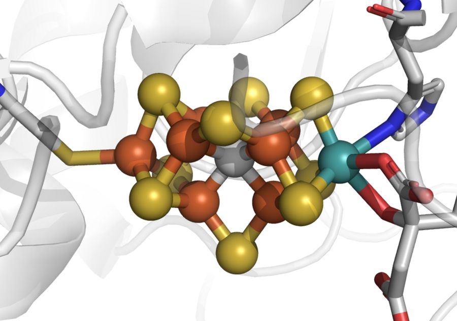

Chemistry and materials are the oldest reason to build one, and the place where the honest answer today is “not shown yet”. Here is what would have to be true, and who is checking.
You'll be able to say which proposed uses of a quantum computer have a real case and which are still hype.
The strongest case for a quantum computer is simulating quantum matter, molecules and materials, the job Feynman named in 1982. As of 2026 no quantum machine has produced a chemistry result that the best classical methods cannot. The flagship target, the nitrogenase cofactor FeMoco, is estimated at about four million physical qubits and under four days, and classical groups have since narrowed the case: the original model was shown to be unrepresentative in 2019, and a January 2026 preprint estimates the replacement model’s energy to chemical accuracy on classical hardware. The case has not vanished. It now rests on problems that classical heuristics fail on and that nobody has yet found.

Electrons in a molecule are entangled with one another. Writing that down exactly takes one number for every arrangement of the electrons among the available orbitals, and the count of arrangements multiplies with every orbital you add. With 30 spin-orbitals, each either occupied or empty, there are 230, about a billion, arrangements; the standard model of FeMoco, 54 electrons in 54 orbitals, has around 1030. No classical memory holds that. A register of 108 qubits holds it natively, because the machine is a quantum system. That is the one place where a quantum computer’s advantage is not a trick played on a puzzle: the problem is the machine’s own physics.
It is not automatic, though. Classical chemistry is not brute force. Methods such as density functional theory, coupled cluster and DMRG exploit structure, and for most molecules they are very good. A quantum machine only wins where the electrons are so strongly correlated that those shortcuts break, and whether such problems exist among the ones anybody needs solved is the open question.
Shown. In October 2025 Google reported a “Quantum Echoes” measurement on its 105-qubit Willow chip that ran 13,000 times faster than the best classical algorithm on one of the world’s fastest supercomputers, by Google’s own account, and whose result can be checked on another machine. A molecule test with UC Berkeley, on molecules of 15 and 28 atoms, matched conventional NMR. Google itself calls that a proof of principle (Google’s announcement).
Not shown. A quantum computation of a chemistry quantity that no classical method can produce, for a molecule someone needs. That is the milestone that would settle it, and it has not happened.
Nitrogenase is the enzyme that turns nitrogen from air into ammonia at room temperature; its active site is a metal cluster called FeMoco. In 2017 Reiher, Wiebe, Svore, Wecker and Troyer proposed it as a quantum target and published resource estimates (PNAS 114, 7555). Later work cut the cost sharply: Lee and colleagues put a FeMoco simulation at about four million physical qubits and under four days, assuming a 1 µs cycle and physical gate errors no worse than 0.1% (PRX Quantum 2, 030305).
Then the classical side answered. In 2019 Li and colleagues in Garnet Chan’s group showed that the 54-orbital model used for those estimates “is not representative” of the real cofactor’s ground state, and proposed a replacement model as the benchmark (arXiv 1809.10307). In January 2026 the same group posted a preprint that estimates that model’s ground-state energy to chemical accuracy with coupled-cluster and DMRG calculations (arXiv 2601.04621). It is a preprint, and an estimate, not an exact solution. But the flagship problem is no longer safely out of classical reach.
The broader audit is in Nature Communications 14, 1952 (2023): the authors examined whether exponential quantum advantage exists for ground-state chemistry and concluded that evidence for it across chemical space has yet to be found. The question turns on whether the features that make a good starting state easy to prepare also let classical heuristics succeed, and their numerical studies found no evidence that they do not.
Machines that exist today are too noisy for the fault-tolerant algorithms above, so the near-term proposal is a hybrid loop, the variational quantum eigensolver (how it works, in The Machinery). Gonthier and colleagues counted what it would cost to get the combustion energies of small organic molecules to chemical accuracy and concluded that current techniques “will not be sufficient to achieve practical quantum computational advantage” for their molecule set (Phys. Rev. Research 4, 033154). The bottleneck is not the qubits but the number of repeated measurements.
Pricing a derivative is a Monte Carlo average, and amplitude estimation gives a real quadratic speedup on those. The catch is the overhead. The most complete resource estimate, by Chakrabarti and colleagues, needs about 8,000 logical qubits and a T-depth of 54 million, and to match one second of classical pricing it needs a logical clock rate of 50 MHz (Quantum 5, 463). Fifty million logical clock cycles per second is the bar the hardware has to clear; nobody has shown it yet.
It does not mean quantum chemistry is a dead end. It means the honest claim moved from “quantum will transform chemistry” to “quantum might help on a narrow class of strongly correlated problems, and we are still looking for the first one.” The Ledger tracks the claims that say more than that.
In second quantisation the electronic Hamiltonian is
where p, q, r, s run over spin-orbitals. The Jordan–Wigner mapping gives each spin-orbital one qubit, so N spatial orbitals need 2N qubits. For the FeMoco model, 54 electrons in 54 spatial orbitals, that is 108 qubits and a state space of 2108 ≈ 3.2 × 1032. Fixing 27 spin-up and 27 spin-down electrons leaves C(54,27)2 ≈ 3.7 × 1030 amplitudes; stored as one 16-byte complex number each, that is about 6 × 1031 bytes. (A minimal-basis H2 molecule, by contrast, is 2 spatial orbitals, 4 qubits, 16 amplitudes.)
Chemical accuracy is 1 kcal/mol, which is 1.59 milli-hartree (1 hartree = 627.5 kcal/mol). Quantum phase estimation reads the energy out to a precision ε with a cost that grows as 1/ε, and for the qubitised version the runtime scales as λ/ε, where λ is the 1-norm of the Hamiltonian’s coefficients. That is why the tensor-hypercontraction factorisation behind the four-million-qubit estimate matters: it shrinks λ.
The catch is the starting state. Phase estimation returns the eigenvalue of whichever eigenstate the input overlaps with. If your guess has overlap γ with the true ground state, each attempt succeeds with probability γ2, so you repeat about 1/γ2 times (about 1/γ with amplitude amplification). If γ falls exponentially as molecules grow, so does the cost, and the exponential advantage disappears. Whether good overlap is available exactly where the classical heuristics fail is the question for which the 2023 audit found no evidence.
Every figure in this section is computed in a script; the quoted resource estimates are the papers’, linked above.
Check yourself
The FeMoco benchmark model has 54 electrons in 54 spatial orbitals. How many qubits does a Jordan–Wigner encoding need?
Each spatial orbital holds a spin-up and a spin-down state, so 54 orbitals are 108 spin-orbitals, and Jordan–Wigner gives each spin-orbital one qubit. The amplitudes are what the 108 qubits hold together: about 1030 of them in the fixed-spin sector, which is why no classical machine stores the state.
QAOA and VQE in full, with the circuits and where they are stuck.
The Machinery, topic 16 →The quantum technologies that already ship, and why they matter sooner than the computer.
Sensing and networks →The other big promise: “quantum will transform scheduling”, checked on one named instance.
The Verdict →MoFe7S9C).png){kind=link}